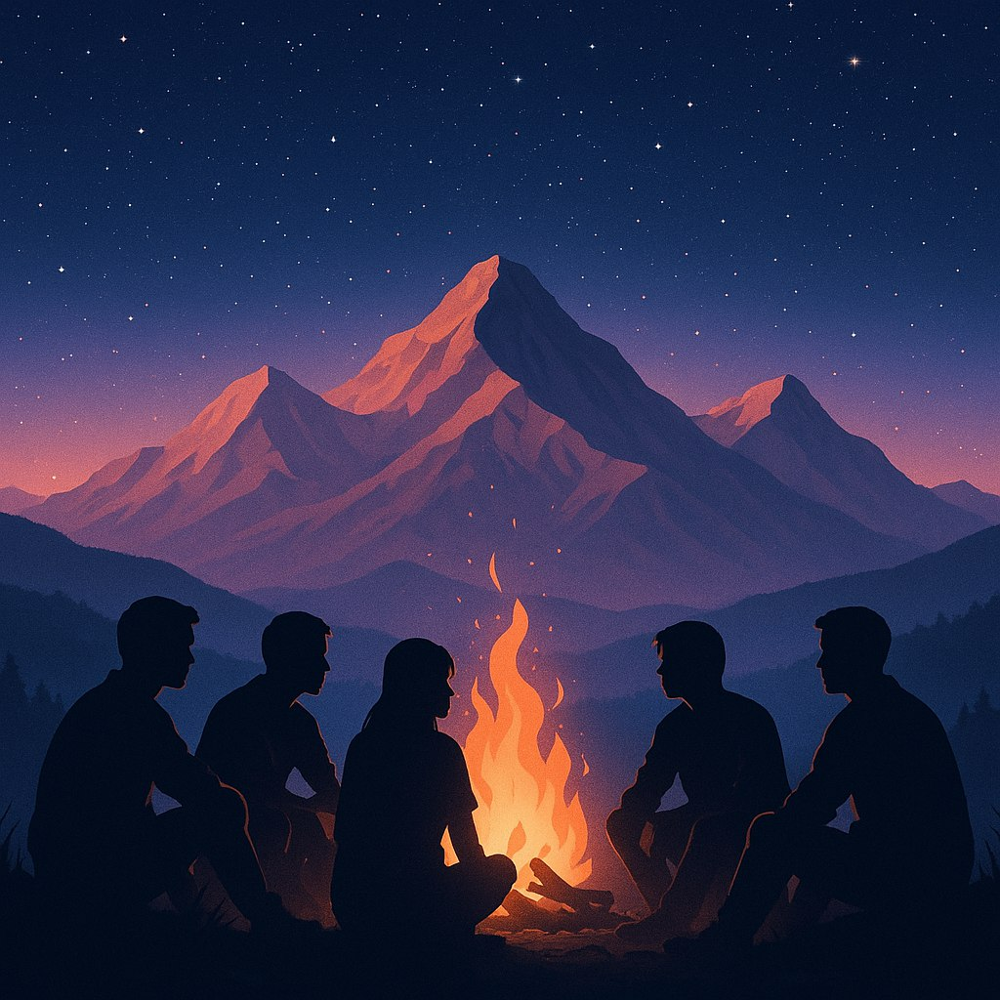

Все почалося з мрії
П'ятеро друзів зібралися біля кам'яного вогнища десь високо в горах і зрозуміли: світ надто прекрасний, щоб зберігати його красу тільки для себе.
Так народився проєкт «Dreamspace» — простір, де ми ділимося найбільш захоплюючими місцями планети з тими, хто, як і ми, вірить у магію подорожей.
Сьогодні ми — команда, яка об'єднана любов'ю до природи та прагненням показати іншим її найкращі куточки. Ми провели сотні експедицій, відкрили десятки унікальних маршрутів і подарували тисячам людей незабутні враження.
